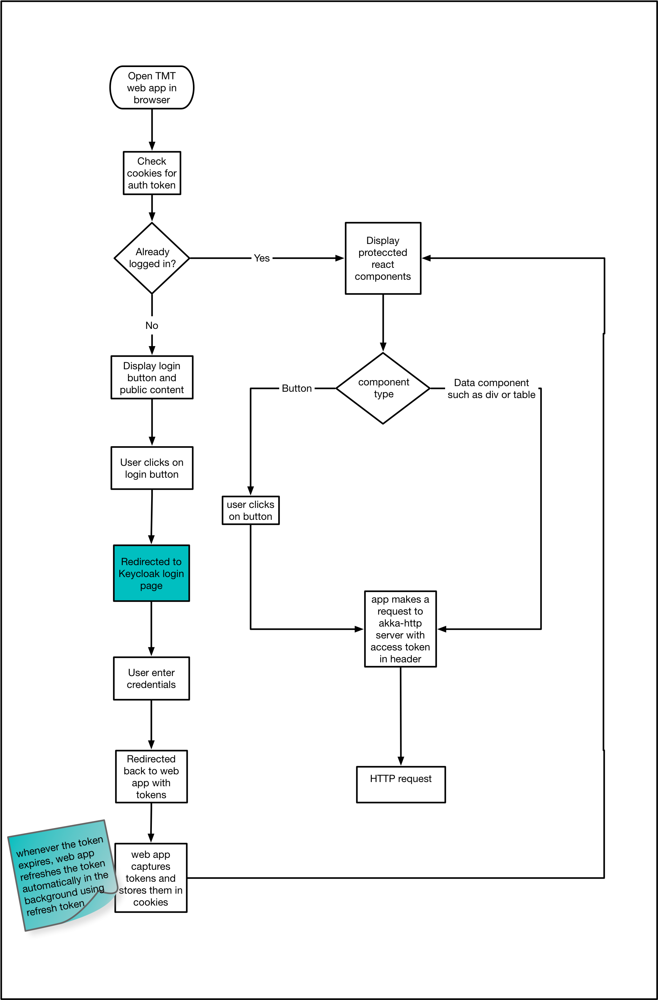

csw-aas-js - Javascript adapter
csw-aas-js is a npm package which exposes react components to enable authentication and authorization. csw-aas-js is built in typescript on top of keycloak-js which is javascript adapter provided by keycloak.
csw-aas-js Implementation
Core implementation of csw-aas-js uses
- keycloak-js - keycloak javascript adapter
- React - JavaScript library for building user interfaces
- Typescript - Types superset of JavaScript which compiles to JavaScript
- csw-location-service - resolve keycloak using location service http endpoint
Project setup
csw-aas-js is a library written in Typescript. tsc is a command line compiler of Typescript which compiles typescrit files to JavaScript. tsc picks up configurations from tsconfig.json file which is at root level of project. tsconfig.json allows to configure multiple compiler options. Please refer this for details of compiler options. npm run build command will run tsc which will produce outputs (.js and .d.ts). .d.ts files are the type declaration files which provide typings for react components exported by library. package.json points to index.js as a entry point for library and index.d.ts as types. This will help csw-aas-js library users to know type signatures of components. e.g. type signature for react component props, api signatures. csw-aas-js can be seamlessly consumed by applications written ES6 or Typescript.
Keycloak
In order for web application utilize keycloak following steps are needed:
-
Registered web application as a public keycloak client Please refer to keycloak documentation for details.
-
Create new Keycloak client instance This instantiation expects config which includes keycloak server url and some application specific config like
realmandclientId. csw-aas-js uses csw location service to resolve keycloak server. If you don’t want to use location service, you can provideAAS-server-urlalong withrealmandclientIdin web application config.
const AppConfig = {
realm: 'example',
clientId: 'example-app',
'AAS-server-url': 'http://localhost:8081/auth'
}
- Initialize javascript adapter To call secure end point, web application first needs to be authenticated using keycloak server. There are two options to make this adapter automatically authenticate -
login-requiredandcheck-sso.login-requiredwill automatically authenticate if the user is already logged-in, otherwise it will display keycloak login page.check-ssowill only authenticate if the user is already logged-in. If the user is not logged-in the browser will be redirected back to the application and remain unauthenticated.
csw-aas-js use check-sso to instantiate keycloak. It shows secure components if user is already logged in. If user is not authenticated Login component is rendered. If user clicks on login button it instantiates keyclock use login-required. This redirects user to keycloak login page. As access token has very short life span, at time of keycloak instantiation csw-aas-js also adds hooks to refresh token. This gives seamless user experience as user need not to login again.
Keycloak adapter supports three authorization flows e.g. authorization code flow, implicit flow and hybrid flow. csw-aas-js has chosen hybrid flow as it has better performance than authorization code flow and unlike implicit flow, hybrid flow makes refresh token available to application. For more information please refer keyclok documentaion for authorization flows
Working of csw-aas-js
When user opens web application in browser, AuthContextProvider component is mounted. Which does instantiation of keycloak client and initialize keycloak javascript adapter with check-sso and hybrid authorization flow. It also creates hooks for refreshing token when token is expired which silently refresh token resulting seamless user experience once logged in. After authentication is done via keycloak javascript adapter, AuthContext is extracted in domain model and this data is passed down the component tree using react context api. AuthContext gives handle to token, realm and resource roles, userInfo. Any component which want to use this information can become consumer of AuthContext. For example
Access token can be extracted from auth and it can be sent in Authorization header for calling secure api
For example -
const SampleComponent = () => {
const url = 'http://localhost:8080/secure-restful-service';
const auth = useContext(AuthContext) //AuthContext from csw-aas-js
const req = new XMLHttpRequest();
req.open('GET', url, true);
req.setRequestHeader('Accept', 'application/json');
//extract token from auth context and set Authorization header
req.setRequestHeader('Authorization', 'Bearer ' + auth.token);
req.onreadystatechange = function () {
if (req.readyState == 4) {
if (req.status == 200) {
alert('Success');
} else if (req.status == 403) {
alert('Forbidden');
}
}
}
req.send();
};
Following diagram explains javascript application flow for making request to secure http api

When user opens web application in browser, csw-aas-js checks if user is already logged in using check-sso mode. If user is not logged in then Login button is shown. When user clicks on login, user will be redirected to keyclok login page. This completes authentication process. Once authentication is done, AuthContextProvider extract AuthContext domain model and make it available to consumers of AuthContext. Protected react components can be shown based on information in AuthContext. For example, CreateConfig component can be shown only to users having config admin role. After the user is authenticated the application can make requests to RESTful services secured by Keycloak by including the bearer token in the Authorization header. This completed workflow for web application calling secure http endpoint.